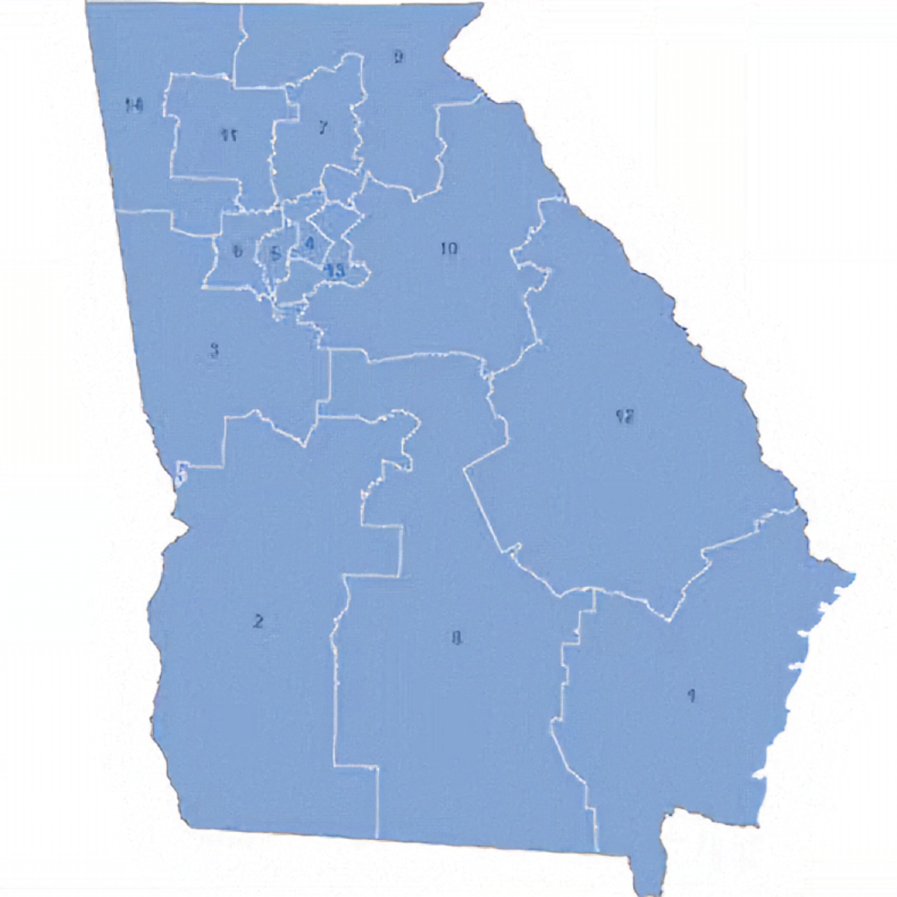
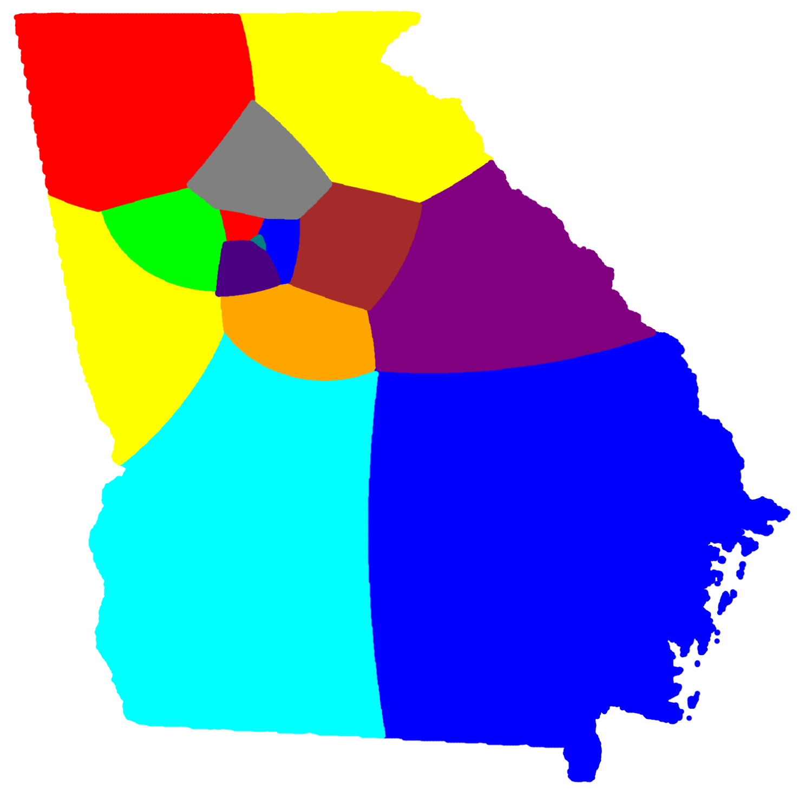
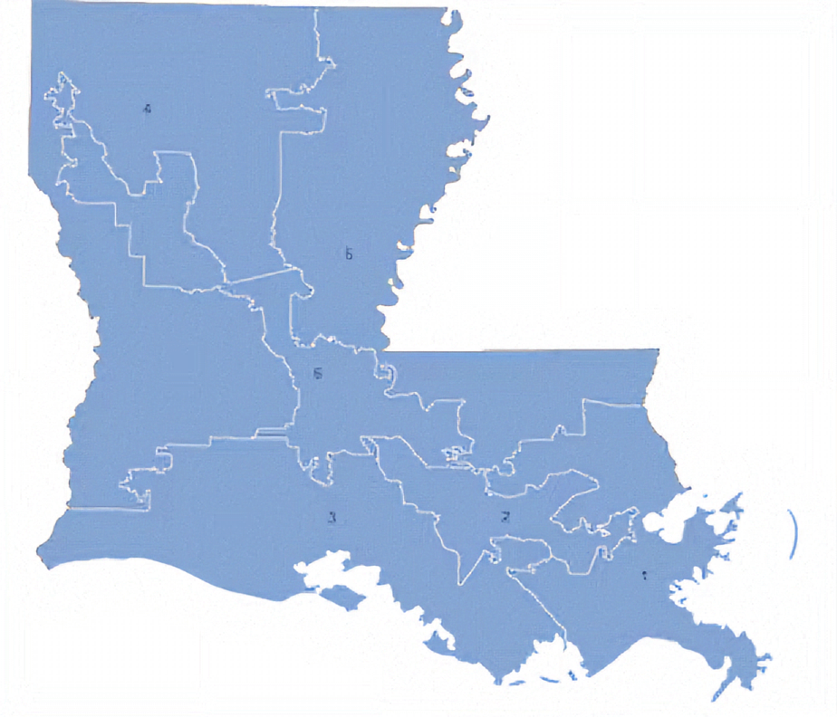
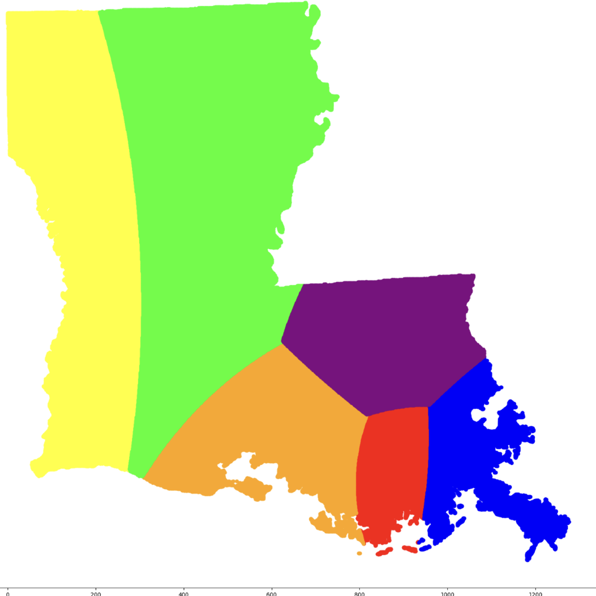
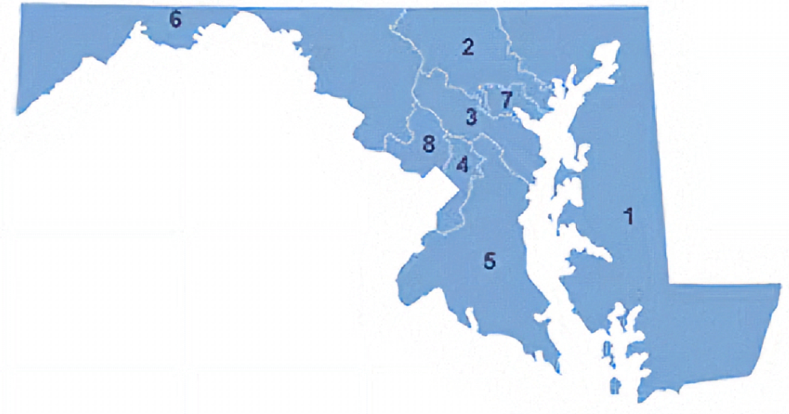

Data Results
Georgia
Georgia Current Districts
Georgia Redistricted Districts
Population Statistics
| District Name | Population | Error in % |
|---|---|---|
| District 1 | 799K | -0.054% |
| District 2 | 798K | +0.071% |
| District 3 | 798K | +0.071% |
| District 4 | 799K | -0.054% |
| District 5 | 798K | +0.071% |
| District 6 | 799K | -0.054% |
| District 7 | 801K | -0.304% |
| District 8 | 798K | +0.071% |
| District 9 | 798K | +0.071% |
| District 10 | 798K | +0.071% |
| District 11 | 798K | +0.071% |
| District 12 | 798K | +0.071% |
| District 13 | 799K | -0.054% |
| District 14 | 799K | +0.054% |
Data Explanation: While Georgia's real-life districts do not look heavily gerrymandered at first glance, Georgia is likely one of the most gerrymandered states in the South. With 14 districts, this state was much more difficult to redistrict. I ran three different attempts, each time slightly improving the algorithm to better handle the redistricting process.
Louisiana
Louisiana Current Districts
Louisiana Redistricted Districts
Population Statistics
| District Name | Population | Error in % |
|---|---|---|
| District 1 | 767K | +0.087% |
| District 2 | 766K | -0.043% |
| District 3 | 767K | +0.087% |
| District 4 | 767K | +0.087% |
| District 5 | 765K | -0.174% |
| District 6 | 766K | -0.043% |
Data Explanation: This state's real-life district borders appear more gerrymandered than those of most states and have been accused of gerrymandering for many years. With only six districts, redistricting Louisiana was fairly simple and took the least amount of time out of all the real-life states I have redistricted.
Maryland
Maryland Current Districts
Maryland Redistricted Districts

Population Statistics
| District | Population | Error in % |
|---|---|---|
| District 1 | 775K | +0.048% |
| District 2 | 776K | +0.178% |
| District 3 | 775K | +0.048% |
| District 4 | 774K | -0.081% |
| District 5 | 772K | -0.339% |
| District 6 | 778K | +0.436% |
| District 7 | 775K | +0.048% |
| District 8 | 772K | -0.339% |
Data Explanation: Maryland has received
criticism for gerrymandering in the past and has updated
their map in 2022. This map is still accused of
gerrymandering, but less so. This map was easy to
redistrict, but took the algorithm longer to train.